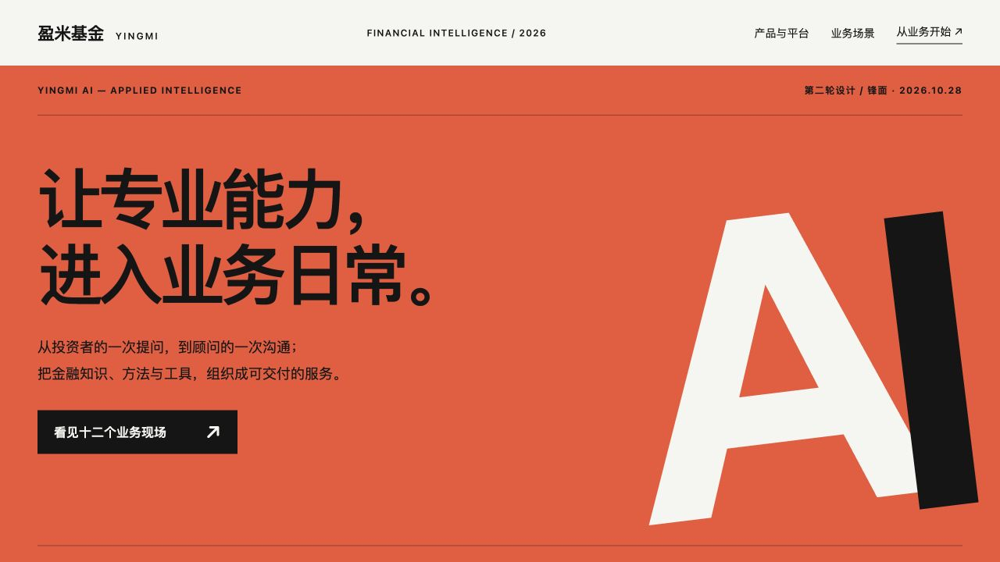

连续曲面与纵深光感贯穿首屏，冷白、浅蓝的整页排版串联产品、场景与交付流程。
TWO NEW DIRECTIONS · 2026.10.28
两种全新表达。
流光，以连续曲面与轻透版式连接专业能力。
锋面，用鲜明的版式与节奏讲述业务全景。

鲜明、有张力的现代编辑设计。用橙红色、超大字与章节变化，让同一份内容更有阅读节奏。
两套均包含 12 类场景、8 项产品与平台、5 层底座和 7 条流程。内容沿用原版核验口径：OAP 截至 2026-10-01，小顾截至 2026-09-01；本次为视觉与展示编排更新。
下载流光科技完整包 ↗